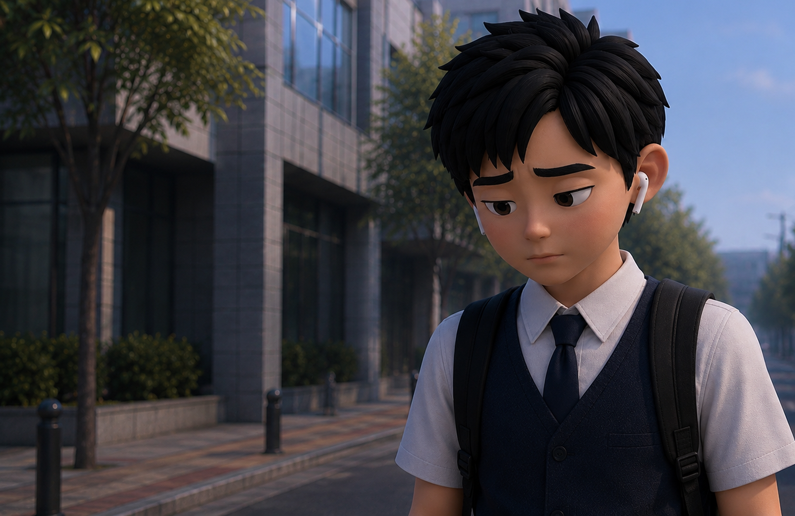
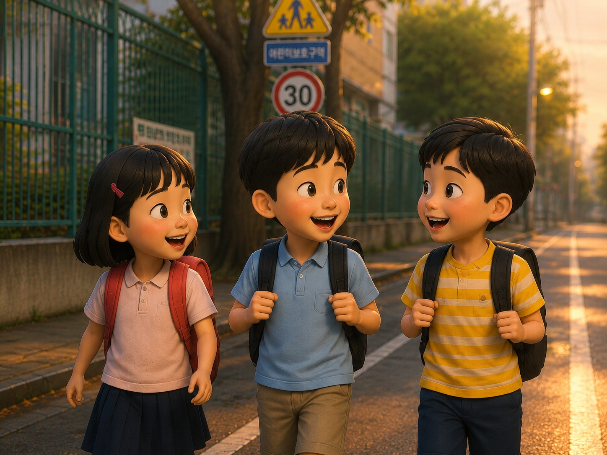
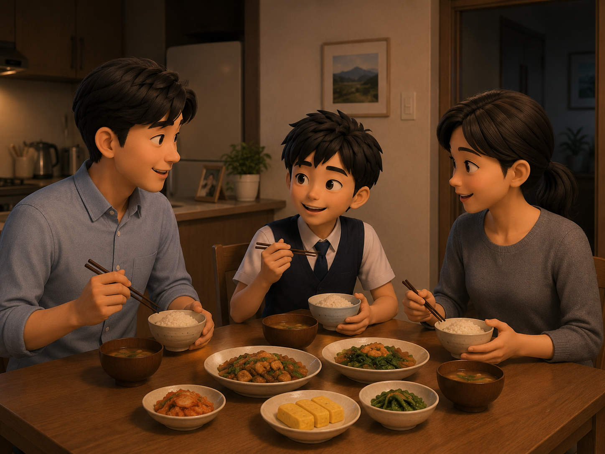
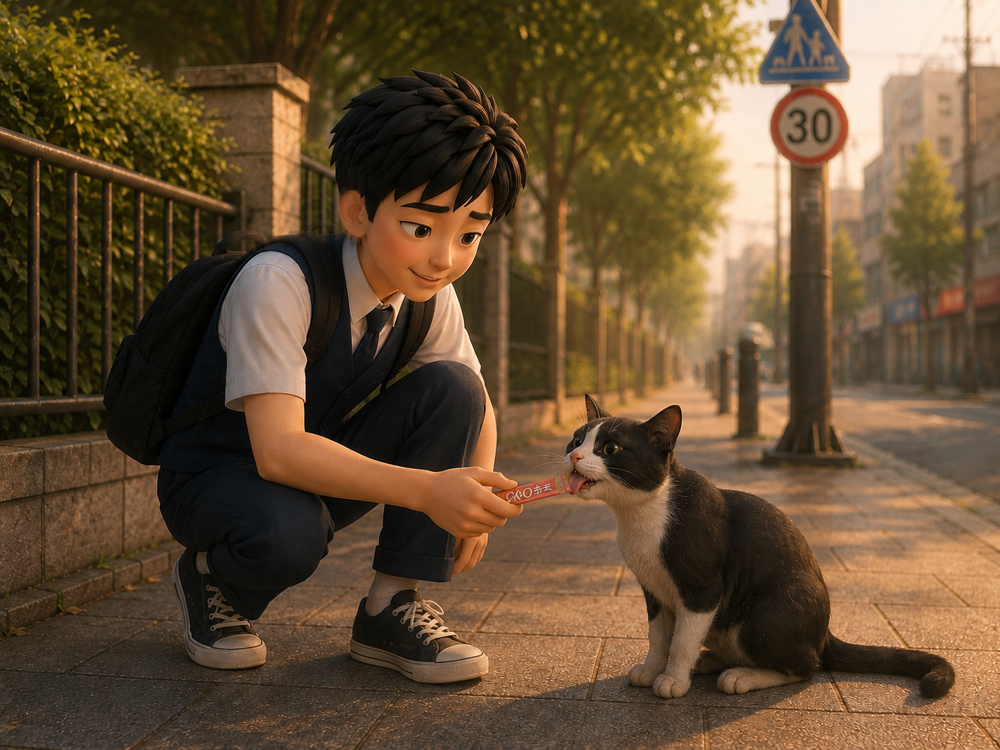
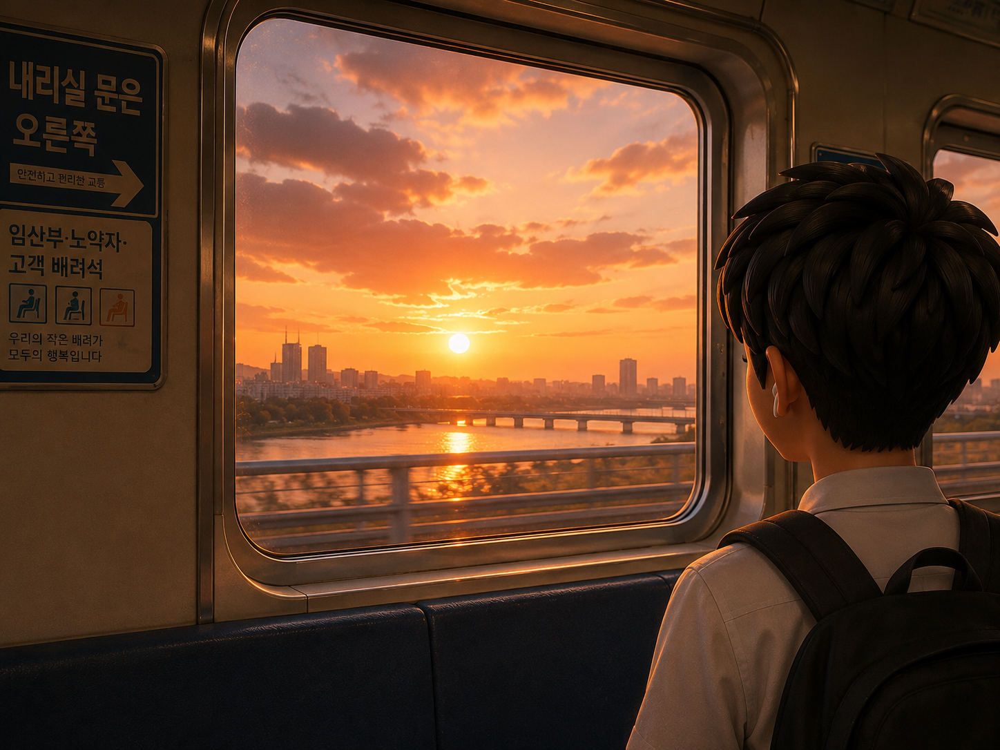
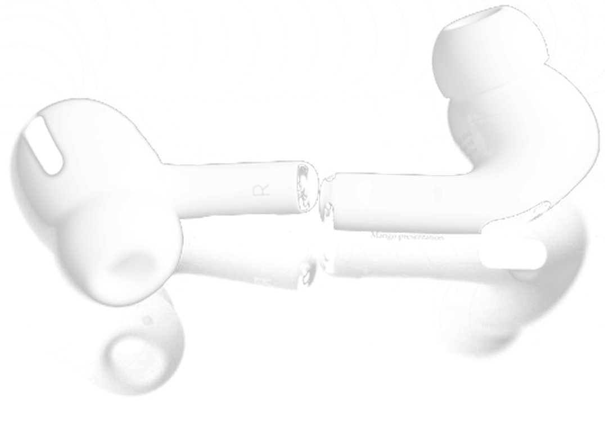
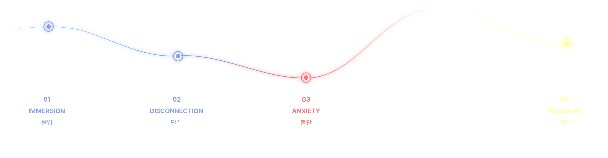
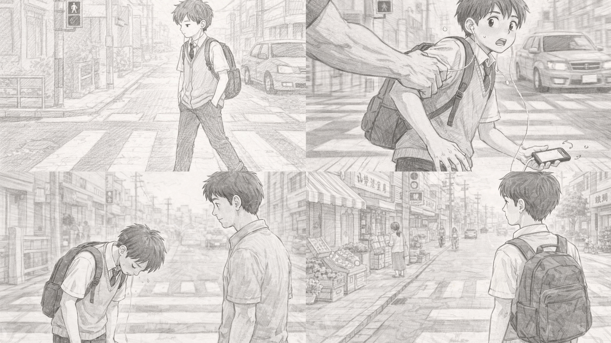
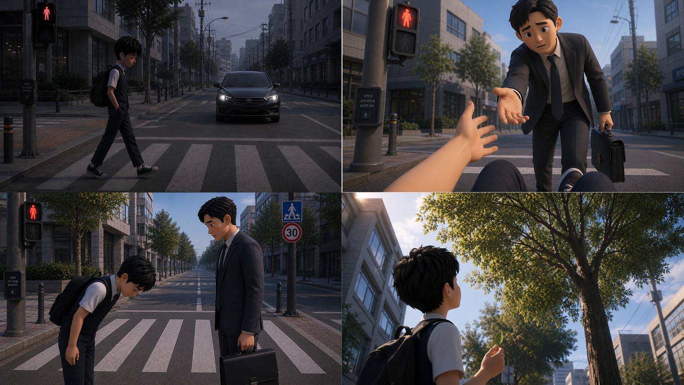

이어폰 너머,
우리가 놓치고 있는 소리는 무엇일까요?

아이들의 웃음소리

가족의 목소리

길고양이의 울음소리

바람이 지나가는 소리

이어폰 속에 갇혀 있던 감각은 점차 단절됩니다.
주변의 위험조차 인식하지 못한 채 불안은 커져갑니다.
이어폰이 벗겨지는 순간, 현실의 소리가 다시 들리며 감각은 회복됩니다.



장면 콘티 및 감정 흐름을
설계했습니다.
ChatGPT를 활용하여 장면별 비주얼 및
캐릭터 이미지를 제작했습니다.
Kling AI를 활용하여 장면 간 움직임과
애니메이션을 구현했습니다.
작품의 몰입과 현실의 대비를 표현하기 위해
AI 기반 사운드 제작 및 편집을 진행했습니다.
영상과 사운드를 통합하여
최종 결과물을 완성했습니다.
우리는 듣고 있다고 생각합니다.